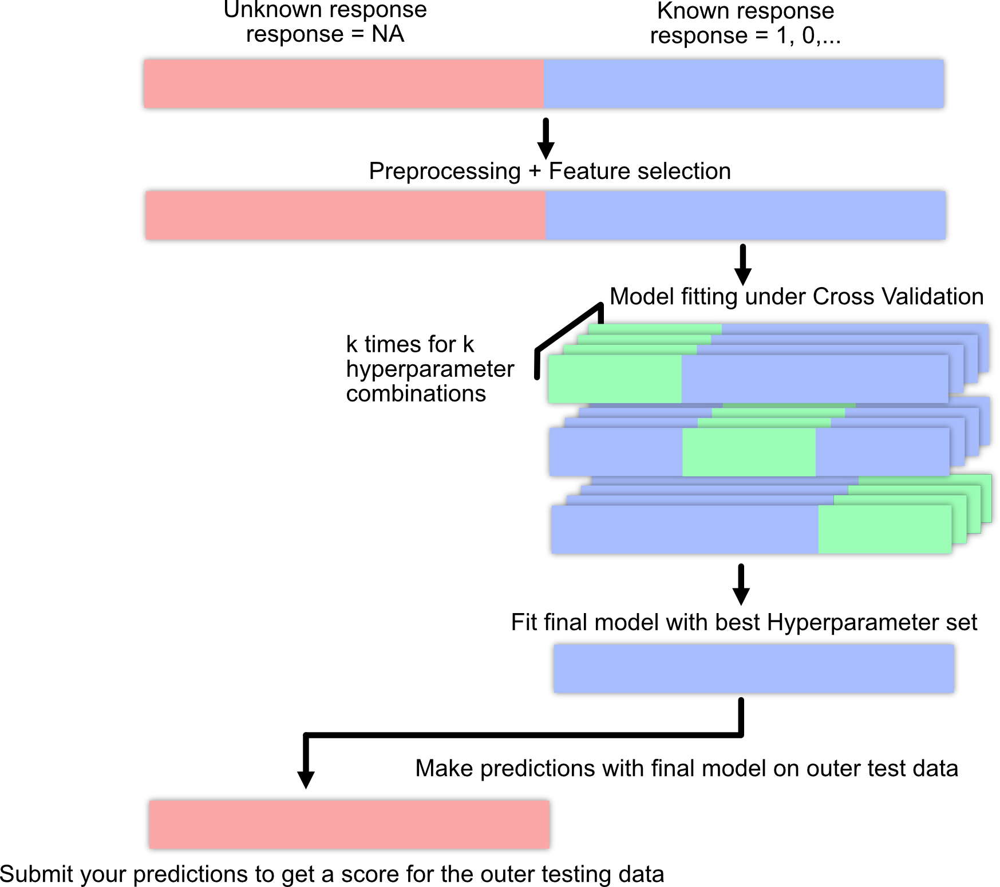

The Standard Machine Learning Pipeline using the Titanic Data set
Before we specialize on any tuning, it is important to understand that machine learning always consists of a pipeline of actions.
The typical machine learning workflow consist of:
Data cleaning and exploration (EDA = explorative data analysis) for example with tidyverse.
Preprocessing and feature selection.
Splitting data set into training and test set for evaluation.
Model fitting.
Model evaluation.
New predictions

Machine Learning pipeline
In the following example, we use tidyverse, a collection of R packages for data science / data manipulation mainly developed by Hadley Wickham.
dplyr and tidyverse
The dplyr package is part of a framework called tidyverse. Unique features of the tidyverse are the pipe %>% operator and tibble objects.
The %>% operator:
Applying several functions in sequence on an object often results in uncountable/confusing number of round brackets:
library(tidyverse)
── Attaching core tidyverse packages ──────────────────────── tidyverse 2.0.0 ──
✔ dplyr 1.1.4 ✔ readr 2.1.5
✔ forcats 1.0.0 ✔ stringr 1.5.1
✔ ggplot2 3.5.1 ✔ tibble 3.2.1
✔ lubridate 1.9.3 ✔ tidyr 1.3.1
✔ purrr 1.0.2
── Conflicts ────────────────────────────────────────── tidyverse_conflicts() ──
✖ dplyr::filter() masks stats::filter()
✖ dplyr::lag() masks stats::lag()
ℹ Use the conflicted package (<http://conflicted.r-lib.org/>) to force all conflicts to become errors
max(mean(range(c(5, 3, 2, 1))))
[1] 3
The pipe operator simplifies that by saying “apply the next function on the result of the current function”:
c(5, 3, 2, 1) %>% range %>% mean %>% max
[1] 3
Which is easier to write, read, and to understand!
tibble objects are just an extension of data.frames. In the course we will use mostly data.frames, so it is better to transform the tibbles back to data.frames:
Another good reference is “R for data science” by Hadley Wickham: .
For this lecture you need the Titanic data set provided by us (via the EcoData package).
You can find it in GRIPS (datasets.RData in the data set and submission section) or at http://rhsbio7.uni-regensburg.de:8500 (VPN for University of Regensburg is required!).
Motivation - We need a model that can predict the survival probability of new passengers.
We have split the data set into training and an outer test/prediction data sets (the test/prediction split has one column less than the train split, as the response for the test/outer split is unknown).
The goal is to build a predictive model that can accurately predict the chances of survival for Titanic passengers!
NA = we don’t have information about the passenger, at the end, we will make predictions for these passengers!
Important: Preprocessing of the data must be done for the training and testing data together!!
4.1 Data preparation
Load necessary libraries:
library(tidyverse)
Load data set:
library(EcoData)data(titanic_ml)data = titanic_ml
Standard summaries:
str(data)
'data.frame': 1309 obs. of 14 variables:
$ pclass : int 2 1 3 3 3 3 3 1 3 1 ...
$ survived : int 1 1 0 0 0 0 0 1 0 1 ...
$ name : chr "Sinkkonen, Miss. Anna" "Woolner, Mr. Hugh" "Sage, Mr. Douglas Bullen" "Palsson, Master. Paul Folke" ...
$ sex : Factor w/ 2 levels "female","male": 1 2 2 2 2 2 2 1 1 1 ...
$ age : num 30 NA NA 6 30.5 38.5 20 53 NA 42 ...
$ sibsp : int 0 0 8 3 0 0 0 0 0 0 ...
$ parch : int 0 0 2 1 0 0 0 0 0 0 ...
$ ticket : Factor w/ 929 levels "110152","110413",..: 221 123 779 542 589 873 472 823 588 834 ...
$ fare : num 13 35.5 69.55 21.07 8.05 ...
$ cabin : Factor w/ 187 levels "","A10","A11",..: 1 94 1 1 1 1 1 1 1 1 ...
$ embarked : Factor w/ 4 levels "","C","Q","S": 4 4 4 4 4 4 4 2 4 2 ...
$ boat : Factor w/ 28 levels "","1","10","11",..: 3 28 1 1 1 1 1 19 1 15 ...
$ body : int NA NA NA NA 50 32 NA NA NA NA ...
$ home.dest: Factor w/ 370 levels "","?Havana, Cuba",..: 121 213 1 1 1 1 322 350 1 1 ...
summary(data)
pclass survived name sex
Min. :1.000 Min. :0.0000 Length:1309 female:466
1st Qu.:2.000 1st Qu.:0.0000 Class :character male :843
Median :3.000 Median :0.0000 Mode :character
Mean :2.295 Mean :0.3853
3rd Qu.:3.000 3rd Qu.:1.0000
Max. :3.000 Max. :1.0000
NA's :655
age sibsp parch ticket
Min. : 0.1667 Min. :0.0000 Min. :0.000 CA. 2343: 11
1st Qu.:21.0000 1st Qu.:0.0000 1st Qu.:0.000 1601 : 8
Median :28.0000 Median :0.0000 Median :0.000 CA 2144 : 8
Mean :29.8811 Mean :0.4989 Mean :0.385 3101295 : 7
3rd Qu.:39.0000 3rd Qu.:1.0000 3rd Qu.:0.000 347077 : 7
Max. :80.0000 Max. :8.0000 Max. :9.000 347082 : 7
NA's :263 (Other) :1261
fare cabin embarked boat
Min. : 0.000 :1014 : 2 :823
1st Qu.: 7.896 C23 C25 C27 : 6 C:270 13 : 39
Median : 14.454 B57 B59 B63 B66: 5 Q:123 C : 38
Mean : 33.295 G6 : 5 S:914 15 : 37
3rd Qu.: 31.275 B96 B98 : 4 14 : 33
Max. :512.329 C22 C26 : 4 4 : 31
NA's :1 (Other) : 271 (Other):308
body home.dest
Min. : 1.0 :564
1st Qu.: 72.0 New York, NY : 64
Median :155.0 London : 14
Mean :160.8 Montreal, PQ : 10
3rd Qu.:256.0 Cornwall / Akron, OH: 9
Max. :328.0 Paris, France : 9
NA's :1188 (Other) :639
The name variable consists of 1309 unique factors (there are 1309 observations…) and could be now transformed. If you are interested in how to do that, take a look at the following box.
Feature engineering of the name variable
length(unique(data$name))
[1] 1307
However, there is a title in each name. Let’s extract the titles:
We will extract all names and split each name after each comma “,”.
We will split the second split of the name after a point “.” and extract the titles.
# A tibble: 18 × 2
f n
<fct> <int>
1 Capt 1
2 Col 4
3 Don 1
4 Dona 1
5 Dr 8
6 Jonkheer 1
7 Lady 1
8 Major 2
9 Master 61
10 Miss 260
11 Mlle 2
12 Mme 1
13 Mr 757
14 Mrs 197
15 Ms 2
16 Rev 8
17 Sir 1
18 the Countess 1
We will combine titles with low occurrences into one title, which we can easily do with the forcats package.
We can count titles again to see the new number of titles:
titles2 %>%fct_count()
# A tibble: 6 × 2
f n
<fct> <int>
1 officer 23
2 royal 6
3 Master 61
4 miss 262
5 mrs 200
6 Mr 757
Add new title variable to data set:
data = data %>%mutate(title = titles2)
4.1.1 Imputation
NAs are a common problem in ML and most ML algorithms cannot handle NAs. For example, the age variable has 20% NAs:
summary(data$age)
Min. 1st Qu. Median Mean 3rd Qu. Max. NA's
0.1667 21.0000 28.0000 29.8811 39.0000 80.0000 263
sum(is.na(data$age)) /nrow(data)
[1] 0.2009167
There are few options how to handle NAs:
Drop observations with NAs, however, we may lose many observations (not what we want!)
Imputation, fill the missing values
We impute (fill) the missing values, for example with the median age. However, age itself might depend on other variables such as sex, class and title. Thus, instead of filling the NAs with the overall median of the passengers, we want to fill the NAs with the median age of these groups so that the associations with the other groups are preserved (or in other words, that the new values are hopefully closer to the unknown true values).
In tidyverse we can “group” the data, i.e. we will nest the observations within categorical variables for which we assume that there may be an association with age (here: group_by after sex, pclass and title). After grouping, all operations (such as our median(age....)) will be done within the specified groups (to get better estimates of these missing NAs).
Later (tomorrow), we want to use Keras in our example, but it cannot handle factors and requires the data to be scaled.
Normally, one would do this for all predictors, but as we only show the pipeline here, we have sub-selected a bunch of predictors and do this only for them. We first scale the numeric predictors and change the factors with only two groups/levels into integers (this can be handled by Keras).
Factors with more than two levels should be one hot encoded (Make columns for every different factor level and write 1 in the respective column for every taken feature value and 0 else. For example: \(\{red, green, green, blue, red\} \rightarrow \{(0,0,1), (0,1,0), (0,1,0), (1,0,0), (0,0,1)\}\)):
one_title =model.matrix(~0+as.factor(title), data = data)colnames(one_title) =levels(data$title)one_sex =model.matrix(~0+as.factor(sex), data = data)colnames(one_sex) =levels(data$sex)one_pclass =model.matrix(~0+as.factor(pclass), data = data)colnames(one_pclass) =paste0("pclass", 1:length(unique(data$pclass)))
And we have to add the dummy encoded variables to the data set:
data =cbind(data.frame(survived= data$survived), one_title, one_sex, age = data$age2,fare = data$fare2, one_pclass)head(data)
4.2 Modelling
4.2.1 Split data for final predictions
To tune our hyperparameters and evaluate our models, we split the data into the training and testing data. The testing data are the observations where the response is NA:
summary(data_sub$survived)
Min. 1st Qu. Median Mean 3rd Qu. Max. NA's
0.0000 0.0000 0.0000 0.3853 1.0000 1.0000 655
655 observations have NAs in our response variable, these are the observations for which we want to make predictions at the end of our pipeline.
We want to tune our hyperparameters (\(\lambda\) and \(\alpha\)). Normally, we should do a nested CV on our training data (data_obs), however, we assume that the test data on the submission server is our outer split, so we can tune our hyperparameters using a n-fold Cross-Validation which serves as our inner CV.
Again, why is it important to tune hyperparameters? Hyperparameters (configuration parameters of our ML algorithms that (mostly) control their complexity) are usually tuned (optimized) in an automatic / systematic way. A common procedure, called random search, is to sample random configuration combinations from the set of hyperparameters and test for each combination the prediction error.
We implement manually a CV to tune the learning rate. We start with a 3xCV and 10x different learning rates:
Starting hyperparameter tuning...
Fitting final model...
model$tuning
# A tibble: 10 × 5
steps test train models lr
<int> <dbl> <dbl> <lgl> <dbl>
1 1 315. 0 NA 0.0394
2 2 314. 0 NA 0.0623
3 3 329. 0 NA 0.0627
4 4 315. 0 NA 0.0804
5 5 315. 0 NA 0.0658
6 6 316. 0 NA 0.0683
7 7 320. 0 NA 0.0417
8 8 321. 0 NA 0.0667
9 9 355. 0 NA 0.00368
10 10 326. 0 NA 0.0818
4.3 Predictions and Submission
When we are satisfied with the performance of our model, we will create predictions for the new observations on the submission server. cito directly returns the best model so we do not have to fit the final model.
For the submission it is critical to change the predictions into a data.frame, select the second column (the probability to survive), and save it with the write.csv function:
Tune training parameters (learning rate, batch size) and regularization
Hints
cito has a feature to automatically tune hyperparameters under Cross Validation!
passing tune(...) to a hyperparameter will tell cito to tune this specific hyperparameter
the tuning = config_tuning(...) let you specify the cross-validation strategy and the number of hyperparameters that should be tested (steps = number of hyperparameter combinations that should be tried)
after tuning, cito will fit automatically a model with the best hyperparameters on the full data and will return this model
Minimal example with the iris dataset:
library(cito)df = irisdf[,1:4] =scale(df[,1:4])model_tuned =dnn(Species~., loss ="softmax",data = iris,lambda =tune(lower =0.0, upper =0.2), # you can pass the "tune" function to a hyerparametertuning =config_tuning(CV =3, steps = 20L) )# tuning resultsmodel_tuned$tuning# model_tuned is now already the best model!
library(EcoData)library(dplyr)library(missRanger)data(titanic_ml)data = titanic_mldata = data %>%select(survived, sex, age, fare, pclass)data[,-1] =missRanger(data[,-1], verbose =0)data_sub = data %>%mutate(age = scales::rescale(age, c(0, 1)),fare = scales::rescale(fare, c(0, 1))) %>%mutate(sex =as.integer(sex) - 1L,pclass =as.integer(pclass - 1L))data_new = data_sub[is.na(data_sub$survived),] # for which we want to make predictions at the enddata_obs = data_sub[!is.na(data_sub$survived),] # data with known responsemodel =dnn(survived~., hidden =c(10L, 10L), # changeactivation =c("selu", "selu"), # changeloss ="binomial", lr =0.05, #changevalidation =0.2,lambda =0.001, # changealpha =0.1, # changelr_scheduler =config_lr_scheduler("reduce_on_plateau", patience =10, factor =0.9),data = data_obs, epochs = 40L, verbose =FALSE, plot=TRUE)
# Predictions:predictions =predict(model, newdata = data_new, type ="response") # change prediction type to response so that cito predicts probabilitieswrite.csv(data.frame(y = predictions[,1]), file ="Max_titanic_dnn.csv")
Question: Hyperparameter tuning rf
Hyperparameter
Explanation
mtry
Subset of features randomly selected in each node (from which the algorithm can select the feature that will be used to split the data).
minimum node size
Minimal number of observations allowed in a node (before the branching is canceled)
max depth
Maximum number of tree depth
Combing back to the titanic dataset from the morning, we want to optimize min node size in our RF using a simple CV.
Prepare the data:
library(EcoData)library(dplyr)library(missRanger)data(titanic_ml)data = titanic_mldata = data %>%select(survived, sex, age, fare, pclass)data[,-1] =missRanger(data[,-1], verbose =0)data_sub = data %>%mutate(age = scales::rescale(age, c(0, 1)),fare = scales::rescale(fare, c(0, 1))) %>%mutate(sex =as.integer(sex) - 1L,pclass =as.integer(pclass - 1L))data_new = data_sub[is.na(data_sub$survived),] # for which we want to make predictions at the enddata_obs = data_sub[!is.na(data_sub$survived),] # data with known responsedata_sub$survived =as.factor(data_sub$survived)data_obs$survived =as.factor(data_obs$survived)
Hints:
adjust the ‘type’ argument in the predict(…) method (the default is to predict classes)
when predicting probabilities, the randomForest will return a matrix, a column for each class, we are interested in the probability of surviving (so the second column)
model =ranger(survived~.,data = data_obs, min.node.size = results[which.max(results$AUC),1], probability =TRUE)write.csv(data.frame(y =predict(model, data_new)$predictions[,1]), file ="Max_titanic_rf.csv")
Question: Hyperparameter tuning BRT
Important hyperparameters:
Hyperparameter
Explanation
eta
learning rate (weighting of the sequential trees)
max depth
maximal depth in the trees (small = low complexity, large = high complexity)
subsample
subsample ratio of the data (bootstrap ratio)
lambda
regularization strength of the individual trees
max tree
maximal number of trees in the ensemble
Combing back to the titanic dataset from the morning, we want to optimize max depth and the eta parameter in xgboost.
Prepare the data:
library(EcoData)library(dplyr)library(missRanger)data(titanic_ml)data = titanic_mldata = data %>%select(survived, sex, age, fare, pclass)data[,-1] =missRanger(data[,-1], verbose =0)data_sub = data %>%mutate(age = scales::rescale(age, c(0, 1)),fare = scales::rescale(fare, c(0, 1))) %>%mutate(sex =as.integer(sex) - 1L,pclass =as.integer(pclass - 1L))data_new = data_sub[is.na(data_sub$survived),] # for which we want to make predictions at the enddata_obs = data_sub[!is.na(data_sub$survived),] # data with known response